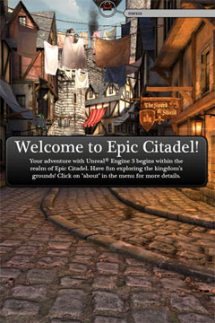
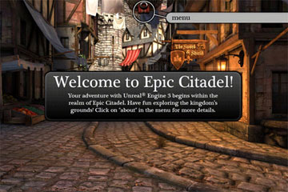
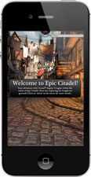
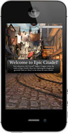
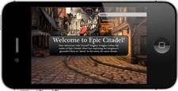
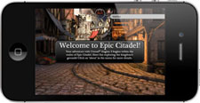
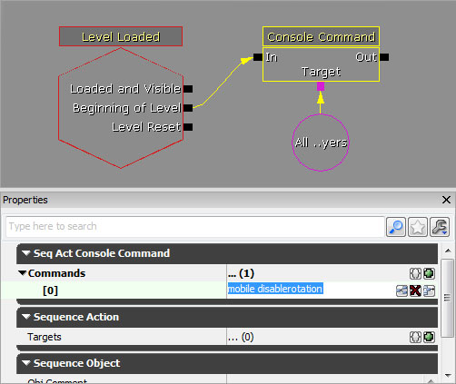

UDN
Search public documentation:
MobileScreenOrientationJP
English Translation
中国翻译
한국어
Interested in the Unreal Engine?
Visit the Unreal Technology site.
Looking for jobs and company info?
Check out the Epic games site.
Questions about support via UDN?
Contact the UDN Staff
中国翻译
한국어
Interested in the Unreal Engine?
Visit the Unreal Technology site.
Looking for jobs and company info?
Check out the Epic games site.
Questions about support via UDN?
Contact the UDN Staff
モバイルスクリーンの方向
概要
|  |  |
| ポートレート | ランドスケープ |
方向の設定
UDKGame/Build/iPhone ディレクトリ内の UDKGameOverrides.plist ファイルに追加します。スクリーンの方向に関係する key が 2 つあります。 UIInterfaceOrientation と UISupportedInterfaceOrientations です。 UIInterfaceOrientation は、起動時の方向を決めます。一方、 UISupportedInterfaceOrientations は、許可されている方向を指定するものです。「Unreal Engine 3」では、 UIInterfaceOrientation の設定項目だけを使用していますが、両方の項目を適切に設定することは大切なことです。
これらの plist の key に有効な値は次のようになります。
|  |  |  |  |
| UIInterfaceOrientationPortrait | UIInterfaceOrientationPortraitUpsideDown | UIInterfaceOrientationLandscapeRight | UIInterfaceOrientationLandscapeLeft |
UDKGameOverrides.plist ファイルで、既存のオーバーライドの後に次を追加します。
<key>UIInterfaceOrientation</key>
<string>UIInterfaceOrientationPortrait</string>
<key>UISupportedInterfaceOrientations</key>
<array>
<string>UIInterfaceOrientationPortrait</string>
<string>UIInterfaceOrientationPortraitUpsideDown</string>
</array>
<?xml version="1.0" encoding="UTF-8"?>
<!DOCTYPE plist PUBLIC "-//Apple//DTD PLIST 1.0//EN" "http://www.apple.com/DTDs/PropertyList-1.0.dtd">
<plist version="1.0">
<dict>
<key>UIFileSharingEnabled</key>
<true />
<key>CFBundleIdentifier</key>
<string>com.udn.example</string>
<key>CFBundleName</key>
<string>MyUDKGame</string>
<key>CFBundleDisplayName</key>
<string>UDK Game</string>
<key>UIInterfaceOrientation</key>
<string>UIInterfaceOrientationPortrait</string>
<key>UISupportedInterfaceOrientations</key>
<array>
<string>UIInterfaceOrientationPortrait</string>
<string>UIInterfaceOrientationPortraitUpsideDown</string>
</array>
</dict>
</plist>
自動回転
- mobile enablerotation
- 自動回転の動作を有効化します。
- mobile disablerotation
- 自動回転の動作を無効化します。

あるいは、 すべてのアクタに備わっているConsoleCommand() 関数を使用してコードを介して呼び出すことができます。これらのコマンドをゲームタイプまたはプレイヤーコントローラで実行することによって、自動回転の動作をグローバルに (少なくともゲーム単位で) 制御することが可能になります。
次の例では、ゲームタイプのために自動回転の動作を強制的に無効にする方法が示されています。
class MyGameInfo extends SimpleGame;
event InitGame(string Options, out string ErrorMessage)
{
super.InitGame(Options, ErrorMessage);
ConsoleCommand("mobile disablerotation");
}